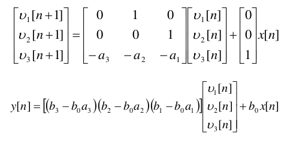
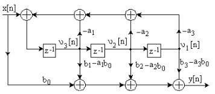
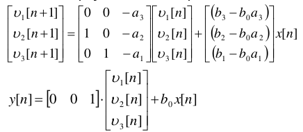
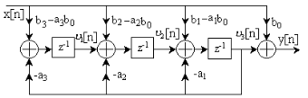
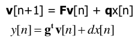
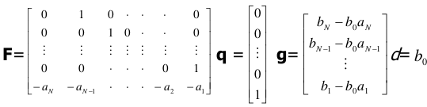
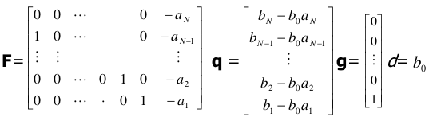

State-space implementations of digital IIR filters
Lab 9, SDP
1 Objective
The students should become familiar with state-space type realization structure used for implementing IIR filters.
2 Theoretical notions
State-Space Type I implementation


The equations defining the state-space type I filter realization are given in Figure 1, for a IIR system of order 3.
The schematic according to these equation is in Figure 2.
State-Space Type II implementation


The equations defining the state-space type II filter realization are given in Figure 3, for a IIR system of order 3.
The schematic according to these equation is in Figure 4.
General equations



In the general case, there are always the two equations in Figure 5:
- the state equation: produces the next state \(\mathbf{v}[n+1]\) depending on the current state \(\mathbf{v}[n]\) and current input \(x[n]\);
- the output equation: produces the current output \(\mathbf{y}[n]\) depending on the current state \(\mathbf{v}[n]\) and current input \(x[n]\).
The definition of the general terms, according to type I or type II, is given in Figure 6 și Figure 7.
3 Theoretical exercises
Consider the IIR system with the system function \[H(z) = \frac{1 + 2z^{-1} + 3 z^{-2} + 2 z^{-3}}{1 + 0.9z^{-1} + 0.8 z^{-2} + 0.5 z^{-3}}\]
- Write the equations and draw the type I and type II state-space implementations of this system
- Compute the first 5 values of the step response, considering the initial conditions \(v[0]= \begin{bmatrix} 0 \\ 0 \\ 1 \end{bmatrix}\)
Consider the system with the following state-space equations:
\[v[n+1] = \begin{bmatrix} 0 & 1 \\ -0.81 & 1 \end{bmatrix} v[n] + \begin{bmatrix} 0 \\ 1 \end{bmatrix} x[n] \] \[y[n] = \begin{bmatrix} - 1.81 & 1 \end{bmatrix} + x[n] \]
- Find the system function of this system
- Compute the first 5 values of the step response, considering the initial conditions \(v[0]= \begin{bmatrix} 0 \\ 1 \end{bmatrix}\)
- Draw the the type I and type II state-space implementations of this system, as well as the direct form II implementation
4 Practical exercises
In the Matlab environment, use the
fdatooltool to design a stopband filter of order 4, elliptic type, with stop band between 1kHz and 3kHz, at a sampling frequency of 44.1kHz. Export the coefficients in the Matlab workspace as the vectorsaandb.In the Matlab environment, implement a function
filter_spst(b, a, x)which filters a signalxwith the filter defined by the coefficientsbanda. Implementation shall follow the type I state-space equations.Test the function written above with the coefficients designed at step 3, by filtering a sample audio signal.
Modify the function to perform temporal filtering of a video sequence, only for a filter of order 3. Test the function on the video sequence
veh_small.mp4.To read frames from a video sequence in Matlab, you can use the following snippet:
v = VideoReader('videofile.mp4'); % Read all the frames from the video, one frame at a time. while hasFrame(v) frame = readFrame(v); % Do the processing here end
5 Final questions
- TBD